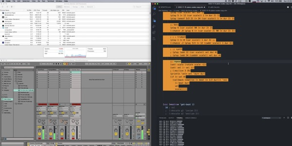
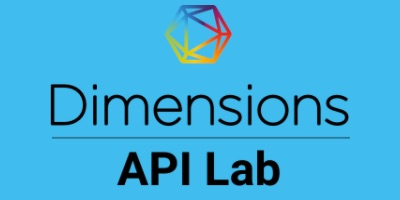
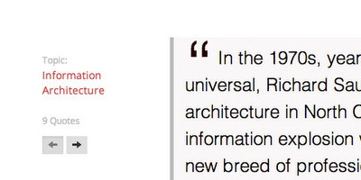
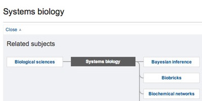
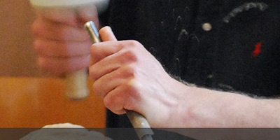
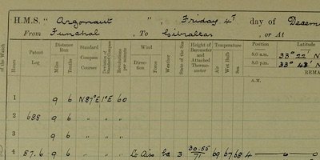
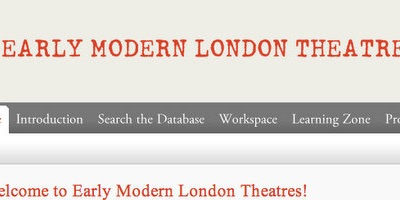

Projects / things i have built
Landscape & Discovery
2023–2026
dashboard, research-analytics

The Musical Code
2022–2026
lisp, livecoding, tool

Dimensions API LAB
2019–2026
python, research-analytics, tool

Ontospy
2014–2026
python, semantic-web, tool

LiquidQuotes
2014–2015
tool, website

Nature Subject Pages
2013–2014
semantic-web, website

Art of Making
2011–2013
digital-humanities, website
Breaking of Britain
2010–2012
digital-humanities, website

SAILS
2010–2011
digital-humanities, semantic-web, tool

EMLoT
2008–2011
digital-humanities, website

Cohere
2007
semantic-web, tool

IRS
2006
semantic-web, tool

PhiloSURFical
2004–2008
digital-humanities, semantic-web, website

Aqualog
2004–2005
semantic-web, tool